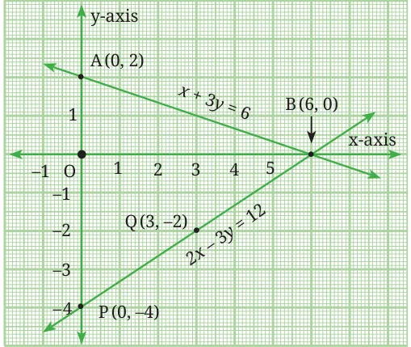
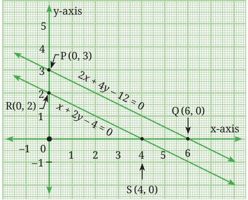
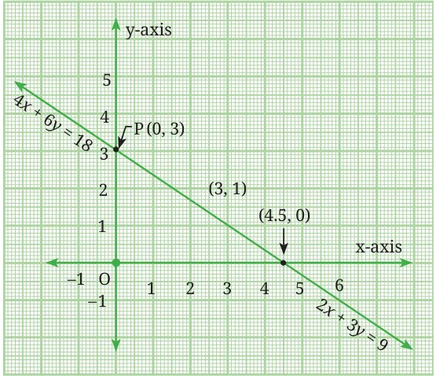

In this section, we learn how to solve a pair of linear equations graphically, that is by plotting the lines represented by the two equations.
Consider the following pairs of linear equations in two variables.
Pair 1: \(2x + y = 6\) and \(x - y = 2\)
Pair 2: \(x + y = 4\) and \(2x + 2y = 8\)
Pair 3: \(3x - 2y = 6\) and \(6x - 4y = 12\)
Pair 4: \(x - 2y = 4\) and \(2x - 4y = 6\)
For each pair, prepare a table of values (with at least two ordered pairs). Plot the points on the Cartesian plane. Draw the straight lines.
Think and Reflect
How do we find solutions from the graph? What can we say about the number of solutions when the two lines (i) intersect at a point, (ii) are parallel, (iii) are coincident?
Solutions to the pair of equations are points that lie on both lines. Thus
- when the lines intersect in a single point, there is a unique solution;
- when the lines are parallel, there are no solutions; and
- when the lines are coincident, there are infinitely many solutions.
Example 11: Solve the pair of linear equations \(x + 3y = 6\) and \(2x - 3y = 12\) graphically. Comment on the nature of the solution.
Consider the equation \(x + 3y = 6\). Expressing \(y\) in terms of \(x\), we get
\(y = \dfrac{6 - x}{3}.\)
Considering \(x\) to be first 0 and then 6 we obtain the corresponding values of \(y\) as 2 and 0 respectively. Hence (0, 2) and (6, 0) are points on the line.
| \(x\) | 0 | 6 |
|---|---|---|
| \(y\) | 2 | 0 |
Now consider the equation \(2x - 3y = 12\). Expressing \(y\) in terms of \(x\), we get \(y = \dfrac{2x - 12}{3}\). Considering \(x\) to be 0 and then 3, we obtain the values of \(y\) as −4, and −2 respectively. Hence (0, −4) and (3, −2) are points on the line.
| \(x\) | 0 | 3 |
|---|---|---|
| \(y\) | −4 | −2 |
Now plot the points A(0, 2), B(6, 0), P(0, −4) and Q(3, −2) on a graph paper, and join the points to form the lines AB and PQ as shown in Fig. 13.14. We observe that the point B(6, 0) is common to both the lines. In fact the lines AB and PQ intersect at B. So, the solution of the pair of linear equations is \(x = 6\) and \(y = 0\). Also, we can say that the given pair of equations has a unique solution.

If we consider the ratios of the corresponding coefficients and constants in the equations \(x + 3y = 6\) and \(2x - 3y = 12\), we get \(\dfrac{a_1}{a_2} = \dfrac{1}{2}\), \(\dfrac{b_1}{b_2} = \dfrac{3}{-3} = -1\). Here \(\dfrac{a_1}{a_2} \ne \dfrac{b_1}{b_2}\). We have also seen graphically that the lines intersect.
Example 12: Determine if the lines \(x + 2y - 4 = 0\) and \(2x + 4y - 12 = 0\) intersect, coincide or are parallel to each other. Then verify your answer by graphing the equations.
On comparing the coefficients of these two equations we get \(\dfrac{a_1}{a_2} = \dfrac{1}{2}\), \(\dfrac{b_1}{b_2} = \dfrac{2}{4} = \dfrac{1}{2}\), \(\dfrac{c_1}{c_2} = \dfrac{-4}{-12} = \dfrac{1}{3}\). We observe that \(\dfrac{a_1}{a_2} = \dfrac{b_1}{b_2}\) but is not equal to \(\dfrac{c_1}{c_2}\). Thus, the equations have no solution and hence the lines are parallel.
As before, we identify the points (0, 2) and (4, 0) on the line \(x + 2y - 4 = 0\)
| \(x\) | 0 | 4 |
|---|---|---|
| \(y\) | 2 | 0 |
Similarly we find two points on the line \(2x + 4y - 12 = 0\), say, (0, 3) and (6, 0).
| \(x\) | 0 | 6 |
|---|---|---|
| \(y\) | 3 | 0 |
To represent the equations graphically, we plot the points R(0, 2) and S(4, 0), to get the line RS and the points P(0, 3) and Q(6, 0) to get the line PQ.

We observe in Fig. 13.15 that the lines do not intersect anywhere and are parallel.
Think and Reflect
Can you prove that two lines of equal slope are parallel?
(Hint: Consider the equations of the two lines to be \(y = mx + d_1\) and \(y = mx + d_2\))
Example 13: Romila went to a stationery shop and purchased 2 erasers and 3 A4 sheets for ₹9. Her friend Sonali saw the new variety of erasers and A4 sheets Romila bought, and she also bought 4 erasers and 6 A4 sheets of the same kind for ₹18. Represent this situation graphically.
Let us denote the cost of a erasers by ₹\(x\) and one A4 sheets by ₹\(y\). Then the algebraic representation is given by the equations \(2x + 3y = 9\) and \(4x + 6y = 18\). Writing these equations in standard form we get \(2x + 3y - 9 = 0\) and \(4x + 6y - 18 = 0\).

We find that both equations are represented by the same straight line. On comparing the coefficients of the two equations we find that \(\dfrac{a_1}{a_2} = \dfrac{2}{4} = \dfrac{1}{2}\), \(\dfrac{b_1}{b_2} = \dfrac{3}{6} = \dfrac{1}{2}\), \(\dfrac{c_1}{c_2} = \dfrac{-9}{-18} = \dfrac{1}{2}\) which represents the fact that the pair of lines has infinitely many solutions.